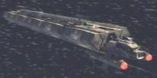
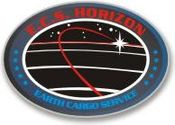

Terrestri - Classe J |
|  |
Dati di una nave tipica di questa classe:
Categoria: Nave cargo poco più piccola di una nave di
Classe Y.
Dislocamento: 30000 tonnellate.
Armi: Due torrette al plasma.
Può rimorchiare cinque moduli cargo di classe III, uniti tra loro
e al modulo di comando con morse magnetiche.
I moduli sono così suddivisi:
modulo A: modulo di comando con la plancia;
modulo B: alloggi dell'equipaggio;
modulo C: stiva.
| ECS Horizon Varata nel 2128 e gestita dalla famiglia Mayweather da alcune generazioni. Comandato fino al 2152 dal padre di Travis Mayweather, data della sua morte. Rianna Mayweather ricopre le funzioni di capo ingegnere e di medico di bordo. Travis è nato su questa nave. La velocità massima della nave è warp 1.82. | Civilization, Fortunate Son, Horizon | |
| [Senza nome] Astronave mercantile di piccole dimensioni. Mudd prende il comando della nave quando il capitano Leo Walsh muore, ma viene fermato dall'Enterprise mentre si sta dirigendo su Ophiucus III con tre donne per cederle in moglie ai coloni del pianeta. | Mudd's Women | La classe della nave di Mudd viene citata solamente nella versione originale. |